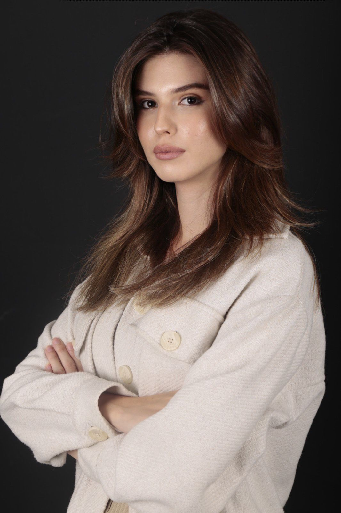

I am Senayda Akkaya. I was born in Istanbul, Turkey in 1999. I started my undergraduate education 2018 at Istanbul MEF University with
English Language Teaching. I graduated in July 2023. Since the beginning of my undergraduate education, I have taught face-toface and online primary, secondary, and high school students. I have so many experiences in terms of teaching. My area of interest is
Educational Technologies in the English Language Teaching department and I conducted qualitative research on “The Attitudes of English Language Teachers with Teaching Experience for more than 15 Years Towards Educational Technology Tools”